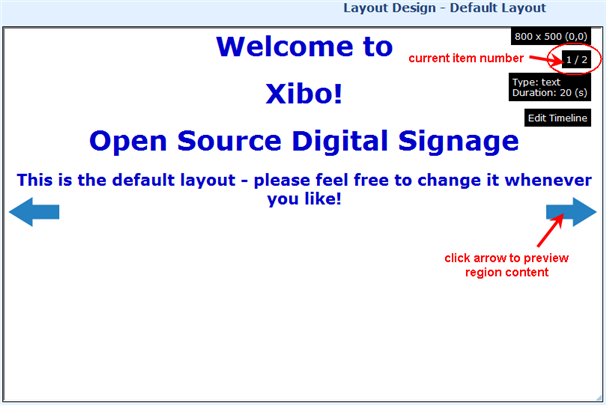
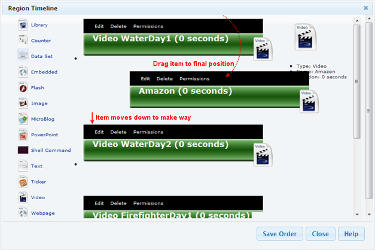
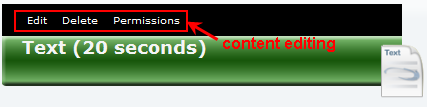

Previewing Regions
In the Layout Designer, each region has two blue arrows on it. Clicking on the blue arrows steps forwards and back through the
media items assigned to that region. Where possible, a preview of the media is shown in the region; else icon is shown in its place.
A media information popup is also shown giving the name of the media and its duration in seconds.

Changing the Region Timeline
You may wish to change the order that media items appear in a region.
The Layout Designer has the ability to reorder media in a region after it has been added. This is achieved through drag and drop.
- Find the region you wish to edit
- Double click the region or click "Edit Timeline" box to open the Region Timeline
- Each item on the timeline is arranged in sequence order of playback. Click and hold your mouse pointer over
the item black bar you want to move
- Drag it to the final position immediately after the item where you want to insert
- Release the mouse button when item on either side has made way for the moved item insertion

Region Content Edit
You may change any of the contents that are assigned to a region.
- Find the region you wish to edit
- Double click the region or click "Edit Timeline" box to open the Region Timeline
- Each item on the timeline displays the edit menu (Edit, Delete, Permissions) in the top black bar
- Click the required edit function of the item to proceed
